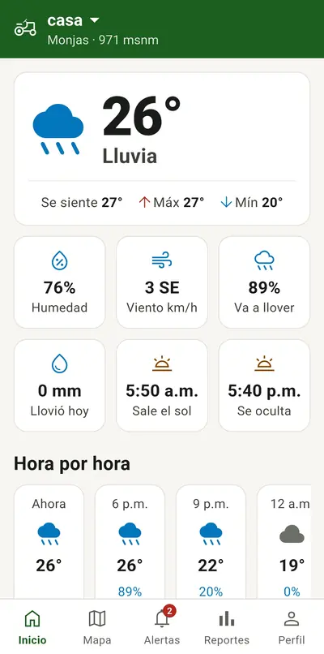
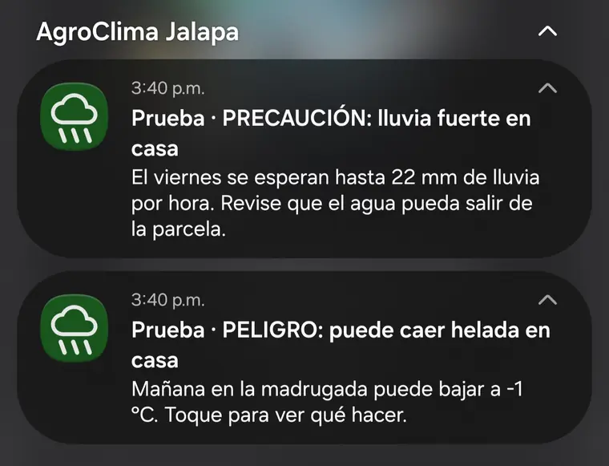
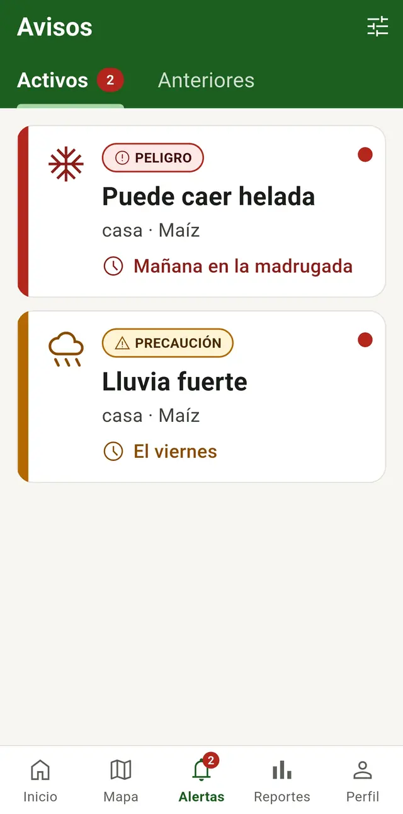
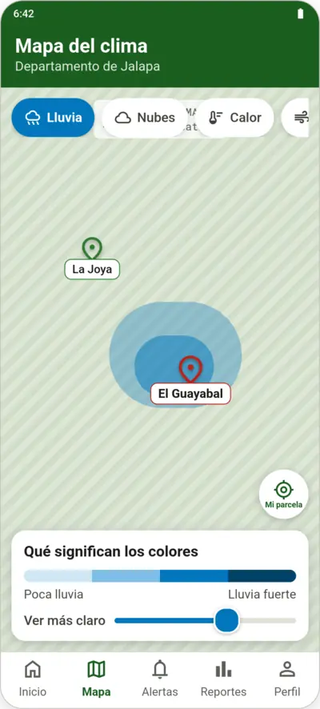
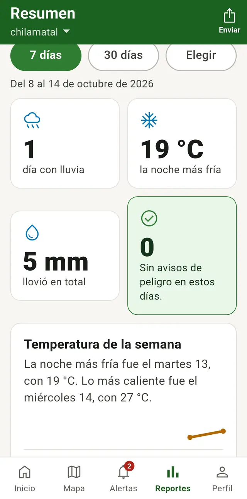

Qué hace la app
-
Marque sus parcelas en el mapa
Con el dedo en el mapa o con la ubicación del teléfono. Diga qué siembra y cómo va el cultivo.
-
El clima de cada parcela
El clima de ahorita y lo que se espera para los próximos 5 días, de su parcela y no solo del municipio.
-
Avisos antes de que pase
Si viene más lluvia, calor, frío o viento de lo que aguanta su maíz, frijol, café u hortalizas, le llega un aviso, aunque tenga la app cerrada.
- NORMAL
- PRECAUCIÓN
- PELIGRO
-
Historial y reportes
Vea cómo estuvo el clima día por día y guarde o comparta un resumen en PDF, Excel o CSV, o imprímalo.
Para los 7 municipios de Jalapa
- Jalapa
- San Pedro Pinula
- San Luis Jilotepeque
- San Manuel Chaparrón
- San Carlos Alzatate
- Monjas
- Mataquescuintla
Así se ve
Capturas de la app en un teléfono, en Monjas. Deslice hacia un lado para ver más.

El clima de hoy 
Así le llegan los avisos 
Sus avisos 
El mapa del clima 
Resumen de la semana
Cómo instalarla
La app no está en la Play Store: se instala con un archivo. Es fácil, siga estos pasos.
- Toque “Descargar la app” y espere a que baje el archivo.
- Ábralo desde Archivos → Descargas.
- Si el teléfono pide permiso para “instalar apps desconocidas”, actívelo y vuelva atrás.
- Toque Instalar. Si Play Protect dice que no conoce la app, toque Más detalles → Instalar de todas formas. Pasa porque no viene de la Play Store.
- Abra AgroClima, cree su cuenta y registre su parcela.
Para verificar el archivo (opcional)
Huella SHA-256 del certificado de firma:
29:59:45:5F:15:D8:3C:FE:72:32:E3:58:F9:26:35:1C:0D:E7:5E:D2:90:23:6A:A2:18:F5:C6:FC:7D:46:82:5B
Preguntas comunes
¿Por qué no me llegan avisos?
Revise que tenga internet y que los avisos estén encendidos en “Mis avisos”. También revise que el teléfono deje a la app mandar avisos.
¿Puedo poner más de una parcela?
Sí. En “Mis parcelas” toque “Agregar parcela”. Cada una tiene su clima y sus avisos.
¿Funciona sin señal?
Sí. Se ve el último clima guardado y la app le dice de qué hora es. Los avisos le llegan cuando vuelva la señal.
¿Los avisos son oficiales?
No. Son información de apoyo calculada con el pronóstico. Siga también lo que digan el INSIVUMEH y CONRED.
¿Qué hago cuando me llega un aviso?
Ábralo: le dice qué puede pasar, cuándo y qué puede hacer para cuidar su cultivo. Cuando haya tomado medidas, toque “Ya tomé medidas”.
¿Cada cuánto se revisa el clima?
Cada 3 horas, aunque tenga la app cerrada. El pronóstico llega hasta 5 días adelante.
¿Cuánto cuesta?
Nada. La app es gratuita.
¿De dónde salen los datos?
Del servicio meteorológico OpenWeather, para un cuadro de unos 5 km donde está su parcela: no es una medición en su terreno. Los avisos los calcula la app con lo que aguanta cada cultivo.
Mapas: Esri. Límites de los municipios: geoBoundaries.
No es un aviso oficial. Es información de apoyo; para emergencias, siga lo que digan el INSIVUMEH y CONRED.
Privacidad y términos de uso
- La app es gratuita y es información de apoyo: las decisiones sobre su cultivo son suyas.
- Guardamos su nombre, correo, teléfono (si lo dio), sus parcelas y los avisos que recibió, solo para darle el clima y los avisos de sus parcelas.
- No vendemos ni compartimos sus datos con nadie.
- Su ubicación se usa solo cuando usted pide poner la parcela donde está.
- Puede eliminar su cuenta cuando quiera en Ajustes: se borra todo en unas horas.
Esta página no usa cookies ni cuenta visitas.
El proyecto
Aplicación móvil de monitoreo meteorológico y alerta de riesgos climáticos para la producción agrícola en Jalapa
- Curso
- Proyecto de Graduación II
- Universidad
- Universidad Mariano Gálvez de Guatemala
- Autor
- Marlon Steven Quintana Recinos
Aplicación Android para los productores de los 7 municipios de Jalapa. Registra parcelas con su cultivo y etapa, consulta el clima y el pronóstico de cada una y, cada 3 horas, compara el pronóstico de 5 días con los umbrales agrometeorológicos del cultivo para mandar avisos automáticos. Guarda el historial y genera reportes en PDF, Excel o CSV. Funciona sin señal con los últimos datos guardados y opera a costo cero.
Tecnologías: Flutter, Firebase (plan gratuito), OpenWeather, GitHub Actions, flutter_map + Esri.